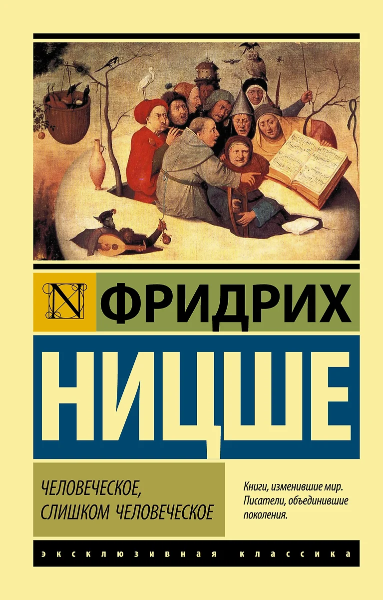

Эта книга — собрание философских афоризмов, в которых Ницше анализирует природу человеческого разума, морали и культуры. «Человеческое, слишком человеческое» демонстрирует переход автора от романтизма к просветительскому взгляду на мир.
Это произведение раскрывает внутренние противоречия людей, их стремления к идеалам и борьбу с собственной сущностью. Ницше приглашает читателя к самоанализу и поиску истины в мире, полном иллюзий.
Мое мнение
Закрыто для публики